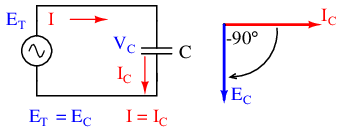
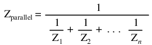

Pure resistive AC circuit: voltage and current are in phase.
If we were to plot the current and voltage for a very simple AC circuit consisting of a source and a resistor, (Figure above) it would look something like this: (Figure below)

Voltage and current “in phase” for resistive circuit.
Because the resistor allows an amount of current directly proportional to the voltage across it at all periods of time, the waveform for the current is exactly in phase with the waveform for the voltage. We can look at any point in time along the horizontal axis of the plot and compare those values of current and voltage with each other (any “snapshot” look at the values of a wave are referred to as instantaneous values, meaning the values at that instant in time). When the instantaneous value for voltage is zero, the instantaneous current through the resistor is also zero. Likewise, at the moment in time where the voltage across the resistor is at its positive peak, the current through the resistor is also at its positive peak, and so on. At any given point in time along the waves, Ohm's Law holds true for the instantaneous values of voltage and current.
We can also calculate the power dissipated by this resistor, and plot those values on the same graph: (Figure below)

Instantaneous AC power in a resistive circuit is always positive.
Note that the power is never a negative value. When the current is positive (above the line), the voltage is also positive, resulting in a power (p=ie) of a positive value. Conversely, when the current is negative (below the line), the voltage is also negative, which results in a positive value for power (a negative number multiplied by a negative number equals a positive number). This consistent “polarity” of power tells us that the resistor is always dissipating power, taking it from the source and releasing it in the form of heat energy. Whether the current is positive or negative, a resistor still dissipates energy.
Capacitors do not behave the same as resistors. Whereas resistors allow a flow of electrons through them directly proportional to the voltage drop, capacitors oppose changes in voltage by drawing or supplying current as they charge or discharge to the new voltage level. The flow of electrons “through” a capacitor is directly proportional to the rate of change of voltage across the capacitor. This opposition to voltage change is another form of reactance, but one that is precisely opposite to the kind exhibited by inductors.
Expressed mathematically, the relationship between the current “through” the capacitor and rate of voltage change across the capacitor is as such:
The expression de/dt is one from calculus, meaning the rate of change of instantaneous voltage (e) over time, in volts per second. The capacitance (C) is in Farads, and the instantaneous current (i), of course, is in amps. Sometimes you will find the rate of instantaneous voltage change over time expressed as dv/dt instead of de/dt: using the lower-case letter “v” instead or “e” to represent voltage, but it means the exact same thing. To show what happens with alternating current, let's analyze a simple capacitor circuit: (Figure below)

Pure capacitive circuit: capacitor voltage lags capacitor current by 90o
If we were to plot the current and voltage for this very simple circuit, it would look something like this: (Figure below)
Pure capacitive circuit waveforms.
Remember, the current through a capacitor is a reaction against the change in voltage across it. Therefore, the instantaneous current is zero whenever the instantaneous voltage is at a peak (zero change, or level slope, on the voltage sine wave), and the instantaneous current is at a peak wherever the instantaneous voltage is at maximum change (the points of steepest slope on the voltage wave, where it crosses the zero line). This results in a voltage wave that is -90o out of phase with the current wave. Looking at the graph, the current wave seems to have a “head start” on the voltage wave; the current “leads” the voltage, and the voltage “lags” behind the current. (Figure below)
Voltage lags current by 90o in a pure capacitive circuit.
As you might have guessed, the same unusual power wave that we saw with the simple inductor circuit is present in the simple capacitor circuit, too: (Figure below)
In a pure capacitive circuit, the instantaneous power may be positive or negative.
As with the simple inductor circuit, the 90 degree phase shift between voltage and current results in a power wave that alternates equally between positive and negative. This means that a capacitor does not dissipate power as it reacts against changes in voltage; it merely absorbs and releases power, alternately.
A capacitor's opposition to change in voltage translates to an opposition to alternating voltage in general, which is by definition always changing in instantaneous magnitude and direction. For any given magnitude of AC voltage at a given frequency, a capacitor of given size will “conduct” a certain magnitude of AC current. Just as the current through a resistor is a function of the voltage across the resistor and the resistance offered by the resistor, the AC current through a capacitor is a function of the AC voltage across it, and the reactance offered by the capacitor. As with inductors, the reactance of a capacitor is expressed in ohms and symbolized by the letter X (or XC to be more specific).
Since capacitors “conduct” current in proportion to the rate of voltage change, they will pass more current for faster-changing voltages (as they charge and discharge to the same voltage peaks in less time), and less current for slower-changing voltages. What this means is that reactance in ohms for any capacitor is inversely proportional to the frequency of the alternating current. (Table below)
Reactance of a 100 uF capacitor:
| Frequency (Hertz) | Reactance (Ohms) |
|---|---|
| 60 | 26.5258 |
| 120 | 13.2629 |
| 2500 | 0.6366 |
Please note that the relationship of capacitive reactance to frequency is exactly opposite from that of inductive reactance. Capacitive reactance (in ohms) decreases with increasing AC frequency. Conversely, inductive reactance (in ohms) increases with increasing AC frequency. Inductors oppose faster changing currents by producing greater voltage drops; capacitors oppose faster changing voltage drops by allowing greater currents.
As with inductors, the reactance equation's 2πf term may be replaced by the lower-case Greek letter Omega (ω), which is referred to as the angular velocity of the AC circuit. Thus, the equation XC = 1/(2πfC) could also be written as XC = 1/(ωC), with ω cast in units of radians per second.
Alternating current in a simple capacitive circuit is equal to the voltage (in volts) divided by the capacitive reactance (in ohms), just as either alternating or direct current in a simple resistive circuit is equal to the voltage (in volts) divided by the resistance (in ohms). The following circuit illustrates this mathematical relationship by example: (Figure below)

Capacitive reactance.
However, we need to keep in mind that voltage and current are not in phase here. As was shown earlier, the current has a phase shift of +90o with respect to the voltage. If we represent these phase angles of voltage and current mathematically, we can calculate the phase angle of the capacitor's reactive opposition to current.
Voltage lags current by 90o in a capacitor.
Mathematically, we say that the phase angle of a capacitor's opposition to current is -90o, meaning that a capacitor's opposition to current is a negative imaginary quantity. (Figure above) This phase angle of reactive opposition to current becomes critically important in circuit analysis, especially for complex AC circuits where reactance and resistance interact. It will prove beneficial to represent any component's opposition to current in terms of complex numbers, and not just scalar quantities of resistance and reactance.
In the last section, we learned what would happen in simple resistor-only and capacitor-only AC circuits. Now we will combine the two components together in series form and investigate the effects. (Figure below)
Series capacitor circuit: voltage lags current by 0o to 90o.
The resistor will offer 5 Ω of resistance to AC current regardless of frequency, while the capacitor will offer 26.5258 Ω of reactance to AC current at 60 Hz. Because the resistor's resistance is a real number (5 Ω ∠ 0o, or 5 + j0 Ω), and the capacitor's reactance is an imaginary number (26.5258 Ω ∠ -90o, or 0 - j26.5258 Ω), the combined effect of the two components will be an opposition to current equal to the complex sum of the two numbers. The term for this complex opposition to current is impedance, its symbol is Z, and it is also expressed in the unit of ohms, just like resistance and reactance. In the above example, the total circuit impedance is:
Impedance is related to voltage and current just as you might expect, in a manner similar to resistance in Ohm's Law:

In fact, this is a far more comprehensive form of Ohm's Law than what was taught in DC electronics (E=IR), just as impedance is a far more comprehensive expression of opposition to the flow of electrons than simple resistance is. Any resistance and any reactance, separately or in combination (series/parallel), can be and should be represented as a single impedance.
To calculate current in the above circuit, we first need to give a phase angle reference for the voltage source, which is generally assumed to be zero. (The phase angles of resistive and capacitive impedance are always 0o and -90o, respectively, regardless of the given phase angles for voltage or current).
As with the purely capacitive circuit, the current wave is leading the voltage wave (of the source), although this time the difference is 79.325o instead of a full 90o. (Figure below)
Voltage lags current (current leads voltage)in a series R-C circuit.
As we learned in the AC inductance chapter, the “table” method of organizing circuit quantities is a very useful tool for AC analysis just as it is for DC analysis. Let's place out known figures for this series circuit into a table and continue the analysis using this tool:

Current in a series circuit is shared equally by all components, so the figures placed in the “Total” column for current can be distributed to all other columns as well:
Continuing with our analysis, we can apply Ohm's Law (E=IR) vertically to determine voltage across the resistor and capacitor:

Notice how the voltage across the resistor has the exact same phase angle as the current through it, telling us that E and I are in phase (for the resistor only). The voltage across the capacitor has a phase angle of -10.675o, exactly 90o less than the phase angle of the circuit current. This tells us that the capacitor's voltage and current are still 90o out of phase with each other.
Let's check our calculations with SPICE: (Figure below)
Spice circuit: R-C.
ac r-c circuit v1 1 0 ac 10 sin r1 1 2 5 c1 2 0 100u .ac lin 1 60 60 .print ac v(1,2) v(2,0) i(v1) .print ac vp(1,2) vp(2,0) ip(v1) .end
freq v(1,2) v(2) i(v1) 6.000E+01 1.852E+00 9.827E+00 3.705E-01 freq vp(1,2) vp(2) ip(v1) 6.000E+01 7.933E+01 -1.067E+01 -1.007E+02

Once again, SPICE confusingly prints the current phase angle at a value equal to the real phase angle plus 180o (or minus 180o). However, its a simple matter to correct this figure and check to see if our work is correct. In this case, the -100.7o output by SPICE for current phase angle equates to a positive 79.3o, which does correspond to our previously calculated figure of 79.325o.
Again, it must be emphasized that the calculated figures corresponding to real-life voltage and current measurements are those in polar form, not rectangular form! For example, if we were to actually build this series resistor-capacitor circuit and measure voltage across the resistor, our voltmeter would indicate 1.8523 volts, not 343.11 millivolts (real rectangular) or 1.8203 volts (imaginary rectangular). Real instruments connected to real circuits provide indications corresponding to the vector length (magnitude) of the calculated figures. While the rectangular form of complex number notation is useful for performing addition and subtraction, it is a more abstract form of notation than polar, which alone has direct correspondence to true measurements.
Impedance (Z) of a series R-C circuit may be calculated, given the resistance (R) and the capacitive reactance (XC). Since E=IR, E=IXC, and E=IZ, resistance, reactance, and impedance are proportional to voltage, respectively. Thus, the voltage phasor diagram can be replaced by a similar impedance diagram. (Figure below)
Series: R-C circuit Impedance phasor diagram.
Example:
Given: A 40 Ω resistor in series with a 88.42 microfarad capacitor. Find the impedance at 60 hertz.
XC = 1/(2πfC) XC = 1/(2π·60·88.42×10-6) XC = 30 Ω Z = R - jXC Z = 40 - j30 |Z| = sqrt(402 + (-30)2) = 50 Ω ∠Z = arctangent(-30/40) = -36.87o Z = 40 - j30 = 50∠-36.87o
Using the same value components in our series example circuit, we will connect them in parallel and see what happens: (Figure below)
Parallel R-C circuit.
Because the power source has the same frequency as the series example circuit, and the resistor and capacitor both have the same values of resistance and capacitance, respectively, they must also have the same values of impedance. So, we can begin our analysis table with the same “given” values:
This being a parallel circuit now, we know that voltage is shared equally by all components, so we can place the figure for total voltage (10 volts ∠ 0o) in all the columns:
Now we can apply Ohm's Law (I=E/Z) vertically to two columns in the table, calculating current through the resistor and current through the capacitor:
Just as with DC circuits, branch currents in a parallel AC circuit add up to form the total current (Kirchhoff's Current Law again):
Finally, total impedance can be calculated by using Ohm's Law (Z=E/I) vertically in the “Total” column. As we saw in the AC inductance chapter, parallel impedance can also be calculated by using a reciprocal formula identical to that used in calculating parallel resistances. It is noteworthy to mention that this parallel impedance rule holds true regardless of the kind of impedances placed in parallel. In other words, it doesn't matter if we're calculating a circuit composed of parallel resistors, parallel inductors, parallel capacitors, or some combination thereof: in the form of impedances (Z), all the terms are common and can be applied uniformly to the same formula. Once again, the parallel impedance formula looks like this:

The only drawback to using this equation is the significant amount of work required to work it out, especially without the assistance of a calculator capable of manipulating complex quantities. Regardless of how we calculate total impedance for our parallel circuit (either Ohm's Law or the reciprocal formula), we will arrive at the same figure:
As with inductors, the ideal capacitor is a purely reactive device, containing absolutely zero resistive (power dissipative) effects. In the real world, of course, nothing is so perfect. However, capacitors have the virtue of generally being purer reactive components than inductors. It is a lot easier to design and construct a capacitor with low internal series resistance than it is to do the same with an inductor. The practical result of this is that real capacitors typically have impedance phase angles more closely approaching 90o (actually, -90o) than inductors. Consequently, they will tend to dissipate less power than an equivalent inductor.
Capacitors also tend to be smaller and lighter weight than their equivalent inductor counterparts, and since their electric fields are almost totally contained between their plates (unlike inductors, whose magnetic fields naturally tend to extend beyond the dimensions of the core), they are less prone to transmitting or receiving electromagnetic “noise” to/from other components. For these reasons, circuit designers tend to favor capacitors over inductors wherever a design permits either alternative.
Capacitors with significant resistive effects are said to be lossy, in reference to their tendency to dissipate (“lose”) power like a resistor. The source of capacitor loss is usually the dielectric material rather than any wire resistance, as wire length in a capacitor is very minimal.
Dielectric materials tend to react to changing electric fields by producing heat. This heating effect represents a loss in power, and is equivalent to resistance in the circuit. The effect is more pronounced at higher frequencies and in fact can be so extreme that it is sometimes exploited in manufacturing processes to heat insulating materials like plastic! The plastic object to be heated is placed between two metal plates, connected to a source of high-frequency AC voltage. Temperature is controlled by varying the voltage or frequency of the source, and the plates never have to contact the object being heated.
This effect is undesirable for capacitors where we expect the component to behave as a purely reactive circuit element. One of the ways to mitigate the effect of dielectric “loss” is to choose a dielectric material less susceptible to the effect. Not all dielectric materials are equally “lossy.” A relative scale of dielectric loss from least to greatest is given in Table below.
Dielectric loss
| Material | Loss |
|---|---|
| Vacuum | Low |
| Air | - |
| Polystyrene | - |
| Mica | - |
| Glass | - |
| Low-K ceramic | - |
| Plastic film (Mylar) | - |
| Paper | - |
| High-K ceramic | - |
| Aluminum oxide | - |
| Tantalum pentoxide | high |
Dielectric resistivity manifests itself both as a series and a parallel resistance with the pure capacitance: (Figure below)
Real capacitor has both series and parallel resistance.
Fortunately, these stray resistances are usually of modest impact (low series resistance and high parallel resistance), much less significant than the stray resistances present in an average inductor.
Electrolytic capacitors, known for their relatively high capacitance and low working voltage, are also known for their notorious lossiness, due to both the characteristics of the microscopically thin dielectric film and the electrolyte paste. Unless specially made for AC service, electrolytic capacitors should never be used with AC unless it is mixed (biased) with a constant DC voltage preventing the capacitor from ever being subjected to reverse voltage. Even then, their resistive characteristics may be too severe a shortcoming for the application anyway.
Contributors to this chapter are listed in chronological order of their contributions, from most recent to first. See Appendix 2 (Contributor List) for dates and contact information.
Jason Starck (June 2000): HTML document formatting, which led to a much better-looking second edition.
Lessons In Electric Circuits copyright (C) 2000-2023 Tony R. Kuphaldt, under the terms and conditions of the CC BY License.
{kind=link}
{kind=link}
{kind=link}
{kind=link}
{kind=link}
{kind=link}
{kind=link}
{kind=link}
{kind=link}
{kind=link}
{kind=link}
{kind=link}
{kind=link}
{kind=link}
{kind=link}